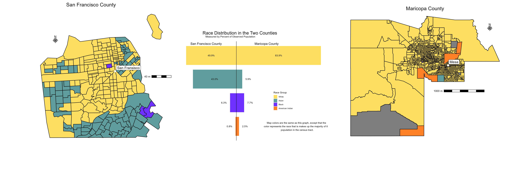
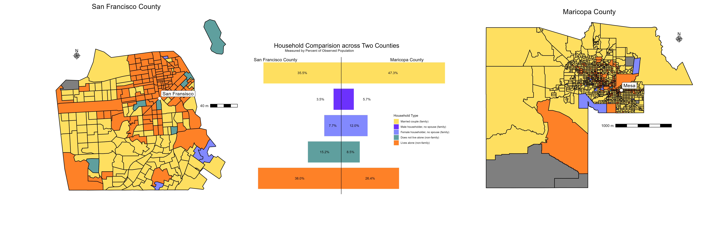
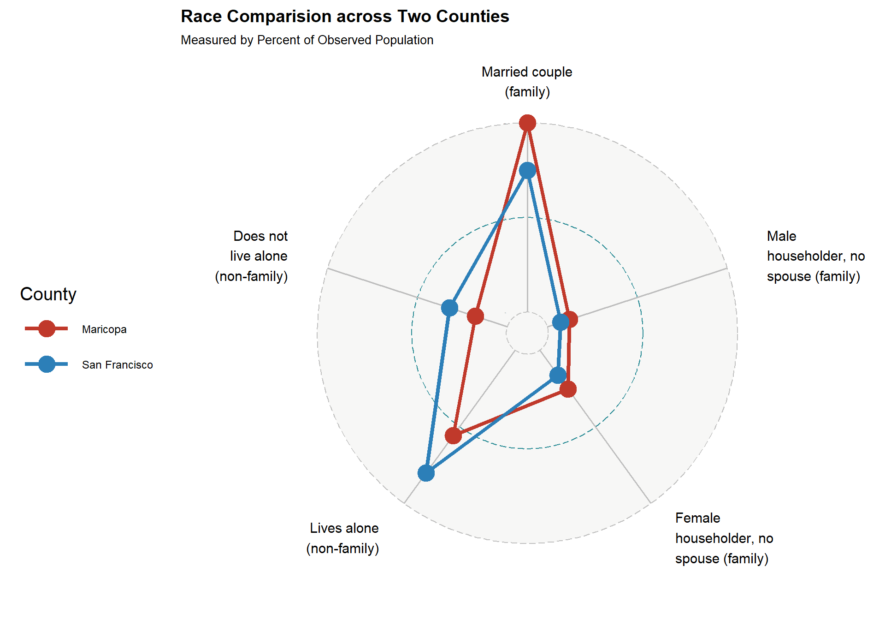
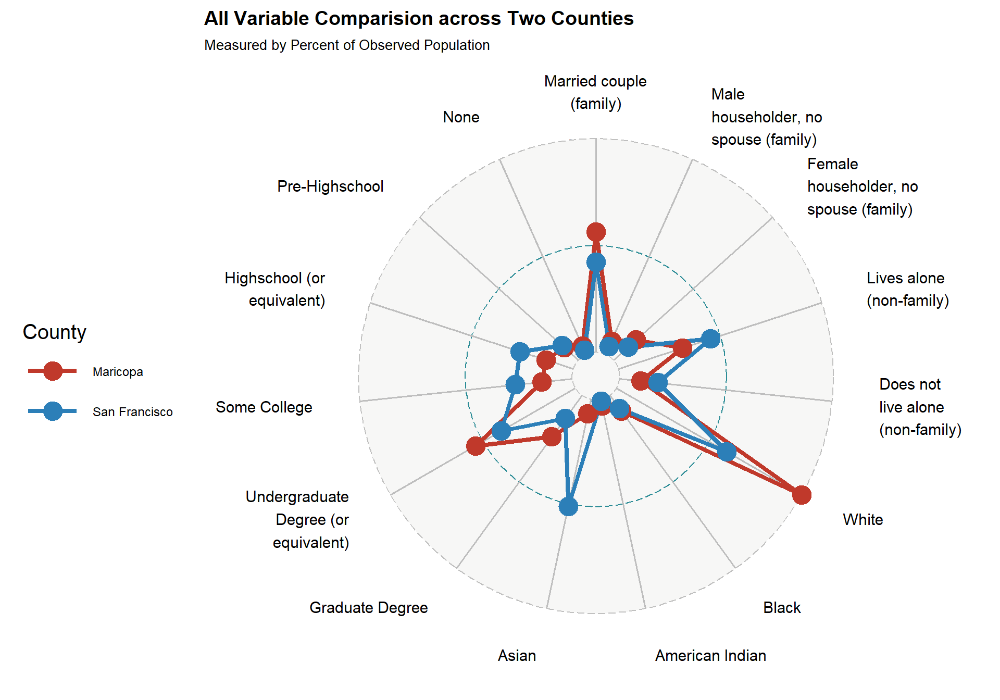

Life can be very different depending on what area you live in. For example, price of living, type of household one lives in, as well as how well educated you are, these are all influenced heavily by where you live in the United States. For our project, we wanted to choose two very different counties, comparing and contrasting the differences in the lifestyle of the average person living there.
ACS Background
The United States Census Bureau also collects the decennial census, which surveys every citizen in the United States on a ten year cycle. This survey often collects basic information about the population. The Census Bureau also runs the American Community Survey (ACS) which asks more in depth questions. The ACS does not survey all Americans like the census does, which can lead to possible margins of error which are also reported along with the data. Despite this, the ACS offers a deeper look into the demographics of the United States. This is why we chose to work with this data. To access the data from the ACS, we utilized the tidycensus package in RStudio. The tidycensus package allows users of RStudio streamlined access to the Census API, which allows developers to use census and ACS data. This made it easier for us to focus on the following cities and their counties.
Motivation
We decided to choose the two most politically different cities in the United States for our comparison. This paper by Pew Research did a study of the most liberal and conservative big cities in America, assigning each a value from -1 (very liberal) to +1 (very conservative). However, please note that big cities often tend towards liberalism, so while San Francisco (the most liberal city) was assigned a score of -1, Mesa (the most conservative city) was assigned a score of +0.4. To pull the census data, we used counties, so San Francisco became “San Francisco county,” and the city of Mesa became “Maricopa county.”
Variable Choices
Along with our goal to see how polarization and demographics are related, we decided to look at demographics that are most commonly associated with a conservative-liberal or democrat-split. The first of these variables is race. In the American political climate, while political candidates tend to try to reach out to people of different races, they tend to focus their attention on one or two groups and address their issues. Typically, more liberal or democratic views are seen to appeal to more diverse groups while focusing on issues that concern them while more conservative views tend to focus on the average white American and less so on the entire population. The next variable is types of households. What does the living situation of the people who answered the ACS in these areas look like? When listening to debates, you often hear conservatives advocating for traditional values and living situations such as married couples living together with their families and fulfilling the “American Dream”. Liberals don’t tend to have the same view, and value all types of living situations. Income is also a factor that comes into play in American Politics. Both conservative and liberal politicians claim to want to help the working class, however, year after year there seems to be more people from lower income brackets voting for the more conservative candidate. The last variable that we will be analyzing is education. While education and income variables are pretty closely related (people with higher income are more likely to have a higher level of education), there is still a distinct relationship between education levels and the views of a person. Those who tend to have higher levels of income are assumed to be more liberal than those who have had a less rigorous education background. Are these preconceptions consistent with the “most liberal” and “most conservative” cities in the United States and their surrounding areas? Or do we look at demographics too seriously when thinking about political backgrounds.
Code
# Getting our data# We are making a function to streamline our data collection from tidy censusget_data <-function(city, variable_list){if(city =="San Francisco"){return(get_acs(state ="CA",county ="San Francisco",geography ="tract",variables = variable_list,geometry =TRUE,year =2021 ) ) }else{return(get_acs(state ="AZ",county ="Maricopa",geography ="tract",variables = variable_list,geometry =TRUE,year =2021 ) ) }}
Code
# Since we are going to be making two identical data sets for each variable we are looking at, it is useful to make a function to reduce clutter and chances or error# This function helps us turn or single value lists into a doubleconvert_to_numeric <-function(value){as.numeric(paste(value))}# This function helps us do the wrangling for the race datawrangling_race <-function(data){ data |>select(geometry,variable,estimate) |>mutate(variable =case_when(variable =="B02001_002"~"white_population", variable =="B02001_003"~"black_african_american", variable =="B02001_004"~"native_american", variable =="B02001_005"~"asian")) |>pivot_wider(names_from = variable, values_from = estimate) |>mutate(white_population =convert_to_numeric(white_population),black_african_american =convert_to_numeric(black_african_american),native_american =convert_to_numeric(native_american),asian =convert_to_numeric(asian)) |>mutate(majority =case_when(white_population > black_african_american & white_population > native_american & white_population > asian ~"White", black_african_american > white_population & black_african_american > native_american & black_african_american > asian ~"Black/African American", native_american > white_population & native_american > black_african_american & native_american > asian ~"Native American", asian > white_population & asian > black_african_american & asian > native_american ~"Asian"))}# This function helps us wrangle the education datawrangling_education <-function(data){ data |>select(geometry,variable,estimate) |>mutate(variable =case_when(variable =="B15003_002"~"none", variable =="B15003_003"~"pre_highschool", variable =="B15003_004"~"pre_highschool", variable =="B15003_005"~"pre_highschool", variable =="B15003_006"~"pre_highschool", variable =="B15003_007"~"pre_highschool", variable =="B15003_008"~"pre_highschool", variable =="B15003_009"~"pre_highschool", variable =="B15003_009"~"pre_highschool", variable =="B15003_010"~"pre_highschool", variable =="B15003_011"~"pre_highschool", variable =="B15003_012"~"pre_highschool", variable =="B15003_013"~"pre_highschool", variable =="B15003_014"~"pre_highschool", variable =="B15003_015"~"pre_highschool", variable =="B15003_016"~"pre_highschool", variable =="B15003_017"~"highschool_or_equivalent", variable =="B15003_018"~"highschool_or_equivalent", variable =="B15003_019"~"some_college", variable =="B15003_020"~"some_college", variable =="B15003_021"~"undergraduate", variable =="B15003_022"~"undergraduate", variable =="B15003_023"~"undergraduate", variable =="B15003_024"~"graduate", variable =="B15003_025"~"graduate")) |>pivot_wider(names_from = variable, values_from = estimate) |>mutate(none =convert_to_numeric(none),pre_highschool =convert_to_numeric(lapply(pre_highschool, sum)),highschool_or_equivalent =convert_to_numeric(lapply(highschool_or_equivalent, sum)),some_college =convert_to_numeric(lapply(some_college, sum)),undergraduate =convert_to_numeric(lapply(undergraduate, sum)),graduate =convert_to_numeric(lapply(graduate, sum))) |>mutate(majority =case_when(none > pre_highschool & none > highschool_or_equivalent & none > some_college & none > undergraduate & none > graduate ~"None", pre_highschool > none & pre_highschool > highschool_or_equivalent & pre_highschool > some_college & pre_highschool > undergraduate & pre_highschool >graduate ~"Pre-highschool", highschool_or_equivalent > none & highschool_or_equivalent > pre_highschool & highschool_or_equivalent > some_college & highschool_or_equivalent > undergraduate & highschool_or_equivalent > graduate ~"Highschool or Equivalent", some_college > none & some_college > pre_highschool & some_college > highschool_or_equivalent & some_college > undergraduate & some_college > graduate ~"Some College", undergraduate > none & undergraduate > pre_highschool & undergraduate > highschool_or_equivalent & undergraduate > some_college & undergraduate > graduate ~"Undergraduate Degree", graduate > none & graduate > pre_highschool & graduate > highschool_or_equivalent & graduate > some_college & graduate > undergraduate ~"graduate"))}# Function for wrangling the household datawrangling_households <-function(data){ data |>select(geometry,variable,estimate) |>mutate(variable =case_when(variable =="B11001_003"~"married_couple", variable =="B11001_005"~"male_householder", variable =="B11001_006"~"female_householder", variable =="B11001_008"~"lives_alone", variable =="B11001_009"~"not_alone")) |>pivot_wider(names_from = variable, values_from = estimate) |>mutate(married_couple =convert_to_numeric(married_couple),male_householder =convert_to_numeric(male_householder),female_householder =convert_to_numeric(female_householder),lives_alone =convert_to_numeric(lives_alone),not_alone =convert_to_numeric(not_alone)) |>mutate(majority =case_when(married_couple > male_householder & married_couple > female_householder & married_couple > lives_alone & married_couple > not_alone ~"Married couple (family)", male_householder > married_couple & male_householder > female_householder & male_householder > lives_alone & male_householder > not_alone ~"Male householder, no spouse (family)", female_householder > married_couple & female_householder > male_householder & female_householder > lives_alone & female_householder > not_alone ~"Female householder, no spouse (family)", lives_alone > married_couple & lives_alone > male_householder & lives_alone > female_householder & lives_alone > not_alone ~"Lives alone (non-family)", not_alone > married_couple & not_alone > male_householder & not_alone > female_householder & not_alone > lives_alone ~"Does not live alone (non-family)"))}# This function helps us clean the data for median incomemedian_income <-function(data){ data |>select(geometry,variable,estimate) |>mutate(variable =case_when( variable =="B07011_001"~"median_income" ) ) |>pivot_wider(names_from = variable, values_from = estimate) |>mutate(median_income =as.numeric(paste(median_income)))}
# data for maps# Data for income in San Franciscosanfrancisco_income <-get_data("San Francisco", "B07011_001") |>median_income()# Data for income in Mesamesa_income <-get_data("Mesa", "B07011_001") |>median_income()
Code
# For breaks we will use the Jenk's Natural Intervals method. This will help us create more natural intervals where the variance in each interval is minimized while the variance between intervals is maximized.# Since we want the maps to have the same breaks, we are going to combine our data to better create breaks that can be used across datasets# Making the breaks for white population mapsmoney_data <-rbind(sanfrancisco_income, mesa_income)income_ni <-classIntervals(money_data$median_income,n =5,style ="jenks" )$brksincome_labels <-c()for (i inseq_along(income_ni)){ income_labels <-c( income_labels, paste0("$", income_ni[i]," to $", income_ni[i+1] ) )}income_labels <- income_labels[1:length(income_labels)-1]sanfrancisco_income$cat <-cut( sanfrancisco_income$median_income,breaks = income_ni,labels = income_labels,include.lowest =TRUE)mesa_income$cat <-cut( mesa_income$median_income ,breaks = income_ni,labels = income_labels,include.lowest =TRUE)
Code
sf_households <-get_acs(state ="CA",county ="San Francisco",geography ="county",variables =c("B11001_003", "B11001_005", "B11001_006", "B11001_008", "B11001_009"),year =2023)ms_households <-get_acs(state ="AZ",county ="Maricopa",geography ="county",variables =c("B11001_003", "B11001_005", "B11001_006", "B11001_008", "B11001_009"),year =2023)household_data <-rbind(sf_households, ms_households) %>%select(NAME, variable, estimate) %>%rename("county"="NAME","household"="variable","population"="estimate") %>%mutate(county =case_when( county =="San Francisco County, California"~"San Francisco", county =="Maricopa County, Arizona"~"Maricopa" )) %>%mutate(household =case_when( household =="B11001_003"~"Married couple (family)", household =="B11001_005"~"Male householder, no spouse (family)", household =="B11001_006"~"Female householder, no spouse (family)", household =="B11001_008"~"Lives alone (non-family)", household =="B11001_009"~"Does not live alone (non-family)" )) %>%mutate(household =factor( household,levels =c("Lives alone (non-family)","Does not live alone (non-family)","Female householder, no spouse (family)","Male householder, no spouse (family)","Married couple (family)" ) ))%>%group_by(county) %>%mutate(prop = population/sum(population)*100) %>%mutate(prop =if_else( county =="San Francisco",-prop, prop ))
cols <-c("#5fa09f","#6c31fd", "#fedf60")sanfrancisco_race_map <-make_sanfrancisco(data = sanfrancisco_race, variable = sanfrancisco_race$majority, title_text ="San Francisco County", legend_name ="Predominate Race in Census Tract", colors = cols)ggsave("sanfrancisco_race_map.png", sanfrancisco_race_map)
Code
cols <-c("#5fa09f", "#6c31fd", "#fe8127", "#fedf60")mesa_race_map <-make_mesa(data = mesa_race, mesa_race$majority, "Maricopa County", "Predominate Race in Census Tract", cols)ggsave("mesa_race.png", mesa_race_map)
Code
race_barplot <-ggplot(race_data, aes(x = race, y = prop, fill = race)) +geom_col(width =0.8) +coord_flip() +labs(title="Race Distribution in the Two Counties",subtitle ="Measured by Percent of Observed Population",y ="Percent of Population", x =NULL, fill ="Race Group") +theme_void() +geom_hline(yintercept =0) +scale_fill_manual(values =c("#fe8127","#6c31fd","#5fa09f","#fedf60")) +guides(fill =guide_legend(reverse =TRUE)) +theme(axis.text.y =element_blank(),legend.position =c(0.7,0.4),legend.direction ="vertical",plot.title =element_text(hjust =0.315, vjust =3.5, size =20),plot.subtitle =element_text(hjust=0.265, vjust =8),plot.margin =margin(1, 1, 1, 1, "cm")) +annotate("text", x=4.5, y =-30, label ="San Francisco County", size =5)+annotate("text", x =4.5, y=30, label ="Maricopa County", size =5)+annotate("text", x=4, y =-24.93, label ="49.9%")+annotate("text", x =3, y =-21.53, label ="43.0%")+annotate("text", x=2, y =-12.3, label ="6.3%")+annotate("text", x=1, y =-6.8, label ="0.8%")+annotate("text", x=4, y =41.95, label ="83.9%")+annotate("text", x=3, y =11.8, label ="5.9%")+annotate("text", x=2, y =13.68, label ="7.7%")+annotate("text", x=1, y =8.58, label ="2.5%")+annotate("text", x =1, y =60, label ="Map colors are the same as this graph, except that the \n color represents the race that is makes up the majority of the \n population in the census tract.")ggsave("race_barplot.png", race_barplot)
Code
race_map_sf <-image_read("sanfrancisco_race_map.png")race_map_mesa <-image_read("mesa_race.png")race_barplot_ig <-image_border(image_scale(image_read("race_barplot.png"),"x1570"), color ="white", geometry ="0x340")race_maps <-image_append(c(race_map_sf,race_barplot_ig, race_map_mesa))image_write(race_maps, path ="race_plot.png", format ="png")
Race

Plot shows the distribution of race in the two counties by census tract and as a county as a whole
San Francisco county was predominantly white (49.9%), with also a large Asian population, and a smaller Black and American Indian population. Maricopa county, on the other hand, was overwhelmingly white (83.9%), with a smaller Asian, Black, and American Indian population.
household_barplot <-ggplot(household_data, aes(x = household, y = prop, fill = household)) +geom_col(width =0.8) +coord_flip() +labs(title="Household Comparision across Two Counties",subtitle ="Measured by Percent of Observed Population",y ="Percent of Population", x =NULL, fill ="Household Type") +theme_void() +scale_fill_manual(values =c("#fe8127","#5fa09f","#8289fe","#6c31fd","#fedf60")) +geom_hline(yintercept =0) +guides(fill =guide_legend(reverse =TRUE)) +theme(axis.text.y =element_blank(),legend.position =c(0.84,0.47),legend.direction ="vertical",plot.title =element_text(hjust =0.315, vjust =3.5, size =20),plot.subtitle =element_text(hjust=0.265, vjust =8),plot.margin =margin(1, 1, 1, 1, "cm")) +annotate("text", x=5.5, y =-30, label ="San Francisco County", size =5)+annotate("text", x =5.5, y=30, label ="Maricopa County", size =5)+annotate("text", x=5, y =-17.75, label ="35.5%")+annotate("text", x=4, y =-9.5, label ="3.5%")+annotate("text", x =3, y =-3.85, label ="7.7%")+annotate("text", x=2, y =-7.6, label ="15.2%")+annotate("text", x=1, y =-19, label ="38.0%")+annotate("text", x=5, y =23.65, label ="47.3%")+annotate("text", x=4, y =11.7, label ="5.7%")+annotate("text", x=3, y =6, label ="12.0%")+annotate("text", x=2, y =4.25, label ="8.5%")+annotate("text", x=1, y =13.2, label ="26.4%")ggsave("household_barplot.png", household_barplot)
Code
household_map_sf <-image_read("sanfrancisco_households.png")household_map_mesa <-image_read("mesa_households.png")household_barplot_ig <-image_border(image_scale(image_read("household_barplot.png"),"x1570"), color ="white", geometry ="0x340")race_maps <-image_append(c(household_map_sf,household_barplot_ig, household_map_mesa))image_write(race_maps, path ="household_plot.png", format ="png")
Households

Plot shows the distribution of household types in the two counties by census tract and as a county as a whole
In our plot, we can see that within these two counties, our preconceived notion is that more traditional/family household types are in the area considered the “most conservative” while there are more non-traditional/non-family households in the area considered the most liberal. The bar plot demonstrates that, while both San Francisco and Maricopa County both have a large percentage of their households that fall in the married couple category, Maricopa County has slightly more. The opposite can be said about live alone households, where San Francisco has a larger percentage of their households falling under this category than Maricopa County. The maps also show that these trends are more true around the cities, where most census tracts around San Francisco have the majority of their households that fall within a non-traditional housing category. More of the census tracts that surround Mesa have the majority of their households fall under the married couple category, which backs up our original idea.
Code
cols =c("#edf8fb", "#b2e2e2","#66c2a4","#2ca25f","#006d2c")make_sanfrancisco(sanfrancisco_income,sanfrancisco_income$cat, "San Francisco County Median Income Distribution", "Median Income",cols)
Code
cols =c("#edf8fb", "#b2e2e2","#66c2a4","#2ca25f","#006d2c")make_mesa(mesa_income, mesa_income$cat,"Maricopa County Median Income Distribution", "Median Income",cols)
Code
avg_income <-get_acs(geography ="county",variables =c("B07011_001"),year =2023) %>%summarize(income =mean(estimate, na.rm =TRUE)/1000) %>%mutate(county ="Average U.S County")sf_income <-get_acs(state ="CA",county ="San Francisco",geography ="county",variables =c("B07011_001"),year =2023)ms_income <-get_acs(state ="AZ",county ="Maricopa",geography ="county",variables =c("B07011_001"),year =2023)income_data <-rbind(sf_income, ms_income)%>%select(NAME, estimate) %>%rename("county"="NAME","income"="estimate") %>%mutate(county =case_when( county =="San Francisco County, California"~"San Francisco", county =="Maricopa County, Arizona"~"Maricopa"),income = income/1000) |>rbind(avg_income) ggplot(income_data, aes(x = county, y = income, fill = county)) +geom_col() +theme_minimal() +labs(title ="Average Annual Income in Two Counties",x ="County",y ="Income (thousand)",fill ="County" ) +scale_fill_manual(values =c("Average U.S County"="#7F7F7F","Maricopa"="#C0392B","San Francisco"="#2C7FB8" ))
#Income San Francisco county had a much larger average annual income ($69,000), than Maricopa ($43,000). However, they were both larger than the average U.S county annual income, which was only $35,000.
education_bar_plot<-ggplot(education_data, aes(x = education, y = prop, fill = education)) +geom_col(width =0.8) +coord_flip() +labs(title="Education Level across Two Counties",subtitle ="Measured by Percent of Observed Population",y ="Percent of Population", x =NULL, fill ="Highest Education Attained") +theme_void() +geom_hline(yintercept =0) +scale_fill_manual(values =c("#6c31fd","#8289fe","#5fa09f","#fe8127","#fedf60","#d23743")) +guides(fill =guide_legend(reverse =TRUE)) +theme(axis.text.y =element_blank(),legend.position =c(0.23,0.3),legend.direction ="vertical",plot.title =element_text(hjust =0.315, vjust =3.5, size =20),plot.subtitle =element_text(hjust=0.265, vjust =8),plot.margin =margin(1, 1, 1, 1, "cm")) +annotate("text", x=6.5, y =-32, label ="San Francisco County", size =5)+annotate("text", x =6.5, y=22, label ="Maricopa County", size =5)+#annotate("text", x=6, y =-10.05, label ="20.1%")+annotate("text", x=5, y =-22.65, label ="45.3%")+annotate("text", x=4, y =-6, label ="12.0%")+annotate("text", x =3, y =-5.65, label ="11.3%")+annotate("text", x=2, y =-3.75, label ="7.5%")+annotate("text", x=1, y =-7.85, label ="3.7%")+annotate("text", x=6, y =5.65, label ="11.3%")+annotate("text", x=5, y =16.8, label ="33.6%")+annotate("text", x=4, y =11.3, label ="22.6%")+annotate("text", x=3, y =11.5, label ="22.0%")+annotate("text", x=2, y =4.3, label ="8.6%")+annotate("text", x=1, y =5.9, label ="1.9%")ggsave("education_barplot.png", education_bar_plot)
Code
household_map_sf <-image_read("sanfrancisco_education.png")household_map_mesa <-image_read("mesa_education.png")household_barplot_ig <-image_border(image_scale(image_read("education_barplot.png"),"x1570"), color ="white", geometry ="0x340")race_maps <-image_append(c(household_map_sf,household_barplot_ig, household_map_mesa))image_write(race_maps, path ="education_plot.png", format ="png")
Education
Plot shows the distribution of the average highest level of education recieved in the two counties by census tract and as a county as a whole.
Our education plot was consistent with our other findings, where the information displayed is consistent with our prior thoughts. However, census tracts around both cities have a majority of people who answered the survey with an undergraduate degree as their highest level of education. This could be because Maricopa county is quite large, and incorporated more areas than San Francisco County, which could have resulted in the more even distribution of highest degree levels.
# Radar with House Variablesggradar( radar_house,group.colours =c("#C0392B", "#2C7FB8"),axis.label.size =4,grid.label.size =0,axis.label.offset =1.2) +labs(title ="Household Comparision across Two Counties",subtitle ="Measured by Percent of Observed Population") +theme(plot.title =element_text(size =14, face ="bold"),plot.subtitle =element_text(size =10),legend.title =element_text(size =15),legend.text =element_text(size =9)) +guides(color =guide_legend(title ="County"))
Code
# Radar with Race Variablesggradar( radar_house,group.colours =c("#C0392B", "#2C7FB8"),axis.label.size =4,grid.label.size =0,axis.label.offset =1.2) +labs(title ="Race Comparision across Two Counties",subtitle ="Measured by Percent of Observed Population") +theme(plot.title =element_text(size =14, face ="bold"),plot.subtitle =element_text(size =10),legend.title =element_text(size =15),legend.text =element_text(size =9)) +guides(color =guide_legend(title ="County"))

Code
ggradar( radar_education,group.colours =c("#C0392B", "#2C7FB8"),axis.label.size =4,grid.label.size =0,axis.label.offset =1.2) +labs(title ="Education Comparision across Two Counties",subtitle ="Measured by Percent of Observed Population") +theme(plot.title =element_text(size =14, face ="bold"),plot.subtitle =element_text(size =10),legend.title =element_text(size =15),legend.text =element_text(size =9)) +guides(color =guide_legend(title ="County"))
Code
ggradar( radar_total,group.colours =c("#C0392B", "#2C7FB8"),axis.label.size =4,grid.label.size =0,axis.label.offset =1.2) +labs(title ="All Variable Comparision across Two Counties",subtitle ="Measured by Percent of Observed Population") +theme(plot.title =element_text(size =14, face ="bold"),plot.subtitle =element_text(size =10),legend.title =element_text(size =15),legend.text =element_text(size =9)) +guides(color =guide_legend(title ="County"))

Larger Scale
We then decided to determine which variable had the largest discrepancy between San Francisco and Maricopa county. By creating a radar plot, we determined that the white population from the race data was the most different between the two counties.
When plotting the percentage of each state that is white who answered the survey, strong trends that we saw in our radar plots were not as strongly reflected, showing that at a larger scale, the states that are more white aren’t necessarily more conservative. We can see this most clearly with states such as Minnesota and Vermont, both of which run liberal, but also have a high percentage of white people. The opposite can be said for states like Texas and Florida, which both tend to be in the middle when it comes to the percentage of the population that is white, but they tend to run more conservative. This suggests that the trends we observed at the county level might not be able to be more widely applied at the state level.
Source Code
---title: "A Tale of Two Counties"---```{r loading libraries}#| include: false.libPaths("C:/R-packages")# loading librarieslibrary(tidyverse)library(stringr)library(forcats)library(ggplot2)library(tidycensus) # Getting our datalibrary(ggthemes)library(grid) # For mapping inset graphslibrary(classInt) # Making breakslibrary(ggspatial) # For adding map annotationslibrary(magick) #for reading pngslibrary(patchwork)library(ggradar)# For making the radar plots```# Intro Life can be very different depending on what area you live in. For example, price of living, type of household one lives in, as well as how well educated you are, these are all influenced heavily by where you live in the United States. For our project, we wanted to choose two very different counties, comparing and contrasting the differences in the lifestyle of the average person living there.# ACS Background The United States Census Bureau also collects the decennial census, which surveys every citizen in the United States on a ten year cycle. This survey often collects basic information about the population. The Census Bureau also runs the American Community Survey (ACS) which asks more in depth questions. The ACS does not survey all Americans like the census does, which can lead to possible margins of error which are also reported along with the data. Despite this, the ACS offers a deeper look into the demographics of the United States. This is why we chose to work with this data. To access the data from the ACS, we utilized the tidycensus package in RStudio. The tidycensus package allows users of RStudio streamlined access to the Census API, which allows developers to use census and ACS data. This made it easier for us to focus on the following cities and their counties.# Motivation We decided to choose the two most politically different cities in the United States for our comparison. This paper by Pew Research did a study of the most liberal and conservative big cities in America, assigning each a value from -1 (very liberal) to +1 (very conservative). However, please note that big cities often tend towards liberalism, so while San Francisco (the most liberal city) was assigned a score of -1, Mesa (the most conservative city) was assigned a score of +0.4. To pull the census data, we used counties, so San Francisco became “San Francisco county,” and the city of Mesa became “Maricopa county.”# Variable Choices Along with our goal to see how polarization and demographics are related, we decided to look at demographics that are most commonly associated with a conservative-liberal or democrat-split. The first of these variables is race. In the American political climate, while political candidates tend to try to reach out to people of different races, they tend to focus their attention on one or two groups and address their issues. Typically, more liberal or democratic views are seen to appeal to more diverse groups while focusing on issues that concern them while more conservative views tend to focus on the average white American and less so on the entire population. The next variable is types of households. What does the living situation of the people who answered the ACS in these areas look like? When listening to debates, you often hear conservatives advocating for traditional values and living situations such as married couples living together with their families and fulfilling the “American Dream”. Liberals don’t tend to have the same view, and value all types of living situations. Income is also a factor that comes into play in American Politics. Both conservative and liberal politicians claim to want to help the working class, however, year after year there seems to be more people from lower income brackets voting for the more conservative candidate. The last variable that we will be analyzing is education. While education and income variables are pretty closely related (people with higher income are more likely to have a higher level of education), there is still a distinct relationship between education levels and the views of a person. Those who tend to have higher levels of income are assumed to be more liberal than those who have had a less rigorous education background. Are these preconceptions consistent with the “most liberal” and “most conservative” cities in the United States and their surrounding areas? Or do we look at demographics too seriously when thinking about political backgrounds. ```{r making funcitons for map data}# Getting our data# We are making a function to streamline our data collection from tidy censusget_data <-function(city, variable_list){if(city =="San Francisco"){return(get_acs(state ="CA",county ="San Francisco",geography ="tract",variables = variable_list,geometry =TRUE,year =2021 ) ) }else{return(get_acs(state ="AZ",county ="Maricopa",geography ="tract",variables = variable_list,geometry =TRUE,year =2021 ) ) }}``````{r making functions for data wrangling}# Since we are going to be making two identical data sets for each variable we are looking at, it is useful to make a function to reduce clutter and chances or error# This function helps us turn or single value lists into a doubleconvert_to_numeric <-function(value){as.numeric(paste(value))}# This function helps us do the wrangling for the race datawrangling_race <-function(data){ data |>select(geometry,variable,estimate) |>mutate(variable =case_when(variable =="B02001_002"~"white_population", variable =="B02001_003"~"black_african_american", variable =="B02001_004"~"native_american", variable =="B02001_005"~"asian")) |>pivot_wider(names_from = variable, values_from = estimate) |>mutate(white_population =convert_to_numeric(white_population),black_african_american =convert_to_numeric(black_african_american),native_american =convert_to_numeric(native_american),asian =convert_to_numeric(asian)) |>mutate(majority =case_when(white_population > black_african_american & white_population > native_american & white_population > asian ~"White", black_african_american > white_population & black_african_american > native_american & black_african_american > asian ~"Black/African American", native_american > white_population & native_american > black_african_american & native_american > asian ~"Native American", asian > white_population & asian > black_african_american & asian > native_american ~"Asian"))}# This function helps us wrangle the education datawrangling_education <-function(data){ data |>select(geometry,variable,estimate) |>mutate(variable =case_when(variable =="B15003_002"~"none", variable =="B15003_003"~"pre_highschool", variable =="B15003_004"~"pre_highschool", variable =="B15003_005"~"pre_highschool", variable =="B15003_006"~"pre_highschool", variable =="B15003_007"~"pre_highschool", variable =="B15003_008"~"pre_highschool", variable =="B15003_009"~"pre_highschool", variable =="B15003_009"~"pre_highschool", variable =="B15003_010"~"pre_highschool", variable =="B15003_011"~"pre_highschool", variable =="B15003_012"~"pre_highschool", variable =="B15003_013"~"pre_highschool", variable =="B15003_014"~"pre_highschool", variable =="B15003_015"~"pre_highschool", variable =="B15003_016"~"pre_highschool", variable =="B15003_017"~"highschool_or_equivalent", variable =="B15003_018"~"highschool_or_equivalent", variable =="B15003_019"~"some_college", variable =="B15003_020"~"some_college", variable =="B15003_021"~"undergraduate", variable =="B15003_022"~"undergraduate", variable =="B15003_023"~"undergraduate", variable =="B15003_024"~"graduate", variable =="B15003_025"~"graduate")) |>pivot_wider(names_from = variable, values_from = estimate) |>mutate(none =convert_to_numeric(none),pre_highschool =convert_to_numeric(lapply(pre_highschool, sum)),highschool_or_equivalent =convert_to_numeric(lapply(highschool_or_equivalent, sum)),some_college =convert_to_numeric(lapply(some_college, sum)),undergraduate =convert_to_numeric(lapply(undergraduate, sum)),graduate =convert_to_numeric(lapply(graduate, sum))) |>mutate(majority =case_when(none > pre_highschool & none > highschool_or_equivalent & none > some_college & none > undergraduate & none > graduate ~"None", pre_highschool > none & pre_highschool > highschool_or_equivalent & pre_highschool > some_college & pre_highschool > undergraduate & pre_highschool >graduate ~"Pre-highschool", highschool_or_equivalent > none & highschool_or_equivalent > pre_highschool & highschool_or_equivalent > some_college & highschool_or_equivalent > undergraduate & highschool_or_equivalent > graduate ~"Highschool or Equivalent", some_college > none & some_college > pre_highschool & some_college > highschool_or_equivalent & some_college > undergraduate & some_college > graduate ~"Some College", undergraduate > none & undergraduate > pre_highschool & undergraduate > highschool_or_equivalent & undergraduate > some_college & undergraduate > graduate ~"Undergraduate Degree", graduate > none & graduate > pre_highschool & graduate > highschool_or_equivalent & graduate > some_college & graduate > undergraduate ~"graduate"))}# Function for wrangling the household datawrangling_households <-function(data){ data |>select(geometry,variable,estimate) |>mutate(variable =case_when(variable =="B11001_003"~"married_couple", variable =="B11001_005"~"male_householder", variable =="B11001_006"~"female_householder", variable =="B11001_008"~"lives_alone", variable =="B11001_009"~"not_alone")) |>pivot_wider(names_from = variable, values_from = estimate) |>mutate(married_couple =convert_to_numeric(married_couple),male_householder =convert_to_numeric(male_householder),female_householder =convert_to_numeric(female_householder),lives_alone =convert_to_numeric(lives_alone),not_alone =convert_to_numeric(not_alone)) |>mutate(majority =case_when(married_couple > male_householder & married_couple > female_householder & married_couple > lives_alone & married_couple > not_alone ~"Married couple (family)", male_householder > married_couple & male_householder > female_householder & male_householder > lives_alone & male_householder > not_alone ~"Male householder, no spouse (family)", female_householder > married_couple & female_householder > male_householder & female_householder > lives_alone & female_householder > not_alone ~"Female householder, no spouse (family)", lives_alone > married_couple & lives_alone > male_householder & lives_alone > female_householder & lives_alone > not_alone ~"Lives alone (non-family)", not_alone > married_couple & not_alone > male_householder & not_alone > female_householder & not_alone > lives_alone ~"Does not live alone (non-family)"))}# This function helps us clean the data for median incomemedian_income <-function(data){ data |>select(geometry,variable,estimate) |>mutate(variable =case_when( variable =="B07011_001"~"median_income" ) ) |>pivot_wider(names_from = variable, values_from = estimate) |>mutate(median_income =as.numeric(paste(median_income)))}``````{r pulling San Francisco map data, include=FALSE}# Getting all the San Francisco data we need# Data for race in San Franciscosanfrancisco_race <-get_data("San Francisco", c("B02001_002", "B02001_003", "B02001_004", "B02001_005")) |>wrangling_race()# Data for households in San Franciscosanfrancisco_households <-get_data("San Francisco", c("B11001_003", "B11001_005", "B11001_006", "B11001_008","B11001_009")) |>wrangling_households()# Data for income in San Franciscosanfrancisco_income <-get_data("San Francisco", "B07011_001") |>median_income()# Data for education in San Franciscosanfrancisco_education <-get_data("San Francisco", c("B15003_002", "B15003_003", "B15003_004", "B15003_005", "B15003_006", "B15003_007", "B15003_008", "B15003_009", "B15003_010", "B15003_011", "B15003_012", "B15003_013", "B15003_014", "B15003_015", "B15003_016", "B15003_017", "B15003_018", "B15003_019", "B15003_020", "B15003_021", "B15003_022", "B15003_023", "B15003_024", "B15003_025")) |>wrangling_education()# City Location sanfrancisco_city <-data.frame(lat =37.7749, long =-122.4194, name ="San Fransisco")``````{r pulling Mesa map data, include=FALSE}# Getting all the data for Mesa# Data for race in Mesamesa_race <-get_data("Mesa", c("B02001_002", "B02001_003", "B02001_004", "B02001_005")) |>wrangling_race()# Data for households in Mesamesa_households <-get_data("Mesa", c("B11001_003", "B11001_005", "B11001_006", "B11001_008","B11001_009")) |>wrangling_households()# Data for income in Mesamesa_income <-get_data("Mesa", "B07011_001") |>median_income()# Data for education in Mesamesa_education <-get_data("Mesa", c("B15003_002", "B15003_003", "B15003_004", "B15003_005", "B15003_006", "B15003_007", "B15003_008", "B15003_009", "B15003_010", "B15003_011", "B15003_012", "B15003_013", "B15003_014", "B15003_015", "B15003_016", "B15003_017", "B15003_018", "B15003_019", "B15003_020", "B15003_021", "B15003_022", "B15003_023", "B15003_024", "B15003_025")) |>wrangling_education()# City Locationmesa_city <-data.frame(lat =33.4152, long =-111.8315, name ="Mesa")``````{r pulling race data and wrangling for barplot, include=FALSE}sf_race <-get_acs(state ="CA",county ="San Francisco",geography ="county",variables =c("B02001_002", "B02001_003", "B02001_004", "B02001_005", "B02001_006", "B02001_007", "B02001_008"),year =2023)ms_race <-get_acs(state ="AZ",county ="Maricopa",geography ="county",variables =c("B02001_002", "B02001_003", "B02001_004", "B02001_005", "B02001_006", "B02001_007", "B02001_008"),year =2023)race_data <-rbind(sf_race, ms_race)%>%select(NAME, variable, estimate) %>%rename("county"="NAME","race"="variable","population"="estimate") %>%mutate(race =case_when( race =="B02001_002"~"White", race =="B02001_003"~"Black", race =="B02001_004"~"American Indian", race =="B02001_005"~"Asian", race =="B02001_006"~"Pacific Islander", race =="B02001_007"~"Other", race =="B02001_008"~"Two or more races" )) %>%mutate(county =case_when( county =="San Francisco County, California"~"San Francisco", county =="Maricopa County, Arizona"~"Maricopa" )) %>%filter(race %in%c("White", "Black", "Asian", "American Indian")) %>%mutate(race =factor( race,levels =c("American Indian","Black","Asian","White" ) )) %>%group_by(county) %>%mutate(prop = population/sum(population)*100) %>%mutate(prop =if_else( county =="San Francisco",-prop, prop )) %>%ungroup()``````{r pulling education data and wrangling for barplot}sf_ed <-get_acs(state ="CA",county ="San Francisco",geography ="county",variables =c("B15003_002","B15003_003","B15003_004","B15003_005","B15003_006","B15003_007","B15003_008","B15003_009","B15003_010","B15003_011","B15003_012","B15003_013","B15003_014","B15003_015","B15003_016","B15003_017","B15003_018","B15003_019","B15003_020","B15003_021","B15003_022","B15003_023","B15003_024","B15003_025"),year =2023) ms_ed <-get_acs(state ="AZ",county ="Maricopa",geography ="county",variables =c("B15003_002","B15003_003","B15003_004","B15003_005","B15003_006","B15003_007","B15003_008","B15003_009","B15003_010","B15003_011","B15003_012","B15003_013","B15003_014","B15003_015","B15003_016","B15003_017","B15003_018","B15003_019","B15003_020","B15003_021","B15003_022","B15003_023","B15003_024","B15003_025"),year =2023)education_data <-rbind(sf_ed, ms_ed) %>%select(NAME, variable, estimate) %>%rename("county"="NAME","education"="variable","population"="estimate") %>%mutate(education =case_when( education =="B15003_002"~"None", education =="B15003_003"~"Nursery", education =="B15003_004"~"Kindergarten", education =="B15003_005"~"Kindergarten", education =="B15003_006"~"Kindergarten", education =="B15003_007"~"Kindergarten", education =="B15003_008"~"Kindergarten", education =="B15003_009"~"Elementary", education =="B15003_010"~"Elementary", education =="B15003_011"~"Elementary", education =="B15003_012"~"Elementary", education =="B15003_013"~"Middle", education =="B15003_014"~"Middle", education =="B15003_015"~"Middle", education =="B15003_016"~"Middle", education =="B15003_017"~"Highschool (or equivalent)", education =="B15003_018"~"GED", education =="B15003_019"~"Some College", education =="B15003_020"~"Some College", education =="B15003_021"~"Associate's", education =="B15003_022"~"Bachelor's", education =="B15003_023"~"Master's", education =="B15003_024"~"Professional", education =="B15003_025"~"Doctorate" )) %>%mutate(education =case_when( education =="None"~"None", education =="Nursery"~"Pre-Highschool", education =="Kindergarten"~"Pre-Highschool", education =="Elementary"~"Pre-Highschool", education =="Middle"~"Pre-Highschool", education =="Highschool (or equivalent)"~"Highschool (or equivalent)", education =="GED"~"Highschool (or equivalent)", education =="Some College"~"Some College", education =="Associate's"~"Undergraduate Degree (or equivalent)", education =="Bachelor's"~"Undergraduate Degree (or equivalent)", education =="Professional"~"Undergraduate Degree (or equivalent)", education =="Master's"~"Graduate Degree", education =="Doctorate"~"Graduate Degree", )) %>%mutate(county =case_when( county =="San Francisco County, California"~"San Francisco", county =="Maricopa County, Arizona"~"Maricopa" ))%>%group_by(county) %>%mutate(prop = population /sum(population)) %>%mutate(education =factor( education,levels =c("Graduate Degree","Undergraduate Degree (or equivalent)","Some College","Highschool (or equivalent)","Pre-Highschool","None" ) ))%>%group_by(county, education) %>%summarize(prop =sum(prop)) %>%ungroup() %>%mutate(prop = prop*100) %>%mutate(prop =if_else( county =="San Francisco",-prop, prop )) %>%mutate(education =factor( education,levels =c("None","Pre-Highschool","Highschool (or equivalent)","Some College","Undergraduate Degree (or equivalent)","Graduate Degree" ) ))``````{r pulling income data}# data for maps# Data for income in San Franciscosanfrancisco_income <-get_data("San Francisco", "B07011_001") |>median_income()# Data for income in Mesamesa_income <-get_data("Mesa", "B07011_001") |>median_income()``````{r making map breaks for income maps}# For breaks we will use the Jenk's Natural Intervals method. This will help us create more natural intervals where the variance in each interval is minimized while the variance between intervals is maximized.# Since we want the maps to have the same breaks, we are going to combine our data to better create breaks that can be used across datasets# Making the breaks for white population mapsmoney_data <-rbind(sanfrancisco_income, mesa_income)income_ni <-classIntervals(money_data$median_income,n =5,style ="jenks" )$brksincome_labels <-c()for (i inseq_along(income_ni)){ income_labels <-c( income_labels, paste0("$", income_ni[i]," to $", income_ni[i+1] ) )}income_labels <- income_labels[1:length(income_labels)-1]sanfrancisco_income$cat <-cut( sanfrancisco_income$median_income,breaks = income_ni,labels = income_labels,include.lowest =TRUE)mesa_income$cat <-cut( mesa_income$median_income ,breaks = income_ni,labels = income_labels,include.lowest =TRUE)``````{r pulling households data and wrangling for barplot}sf_households <-get_acs(state ="CA",county ="San Francisco",geography ="county",variables =c("B11001_003", "B11001_005", "B11001_006", "B11001_008", "B11001_009"),year =2023)ms_households <-get_acs(state ="AZ",county ="Maricopa",geography ="county",variables =c("B11001_003", "B11001_005", "B11001_006", "B11001_008", "B11001_009"),year =2023)household_data <-rbind(sf_households, ms_households) %>%select(NAME, variable, estimate) %>%rename("county"="NAME","household"="variable","population"="estimate") %>%mutate(county =case_when( county =="San Francisco County, California"~"San Francisco", county =="Maricopa County, Arizona"~"Maricopa" )) %>%mutate(household =case_when( household =="B11001_003"~"Married couple (family)", household =="B11001_005"~"Male householder, no spouse (family)", household =="B11001_006"~"Female householder, no spouse (family)", household =="B11001_008"~"Lives alone (non-family)", household =="B11001_009"~"Does not live alone (non-family)" )) %>%mutate(household =factor( household,levels =c("Lives alone (non-family)","Does not live alone (non-family)","Female householder, no spouse (family)","Male householder, no spouse (family)","Married couple (family)" ) ))%>%group_by(county) %>%mutate(prop = population/sum(population)*100) %>%mutate(prop =if_else( county =="San Francisco",-prop, prop ))``````{r function for mapping San Francisco}make_sanfrancisco <-function(data, variable, title_text, legend_name, colors){ggplot()+geom_sf(data = data,aes(fill = variable),color ="black",size =0.5 )+geom_point(data = sanfrancisco_city, aes(x = long, y = lat), color ="white", size =2.5)+geom_label(data = sanfrancisco_city, aes(x = long, y = lat, label = name), hjust =-0.04, vjust =-0.25, fill ="white", alpha =1)+scale_x_continuous(limits =c(-122.5, -122.4), expand =c(0, 0) )+scale_y_continuous(limits =c(37.7, 37.84), expand =c(0,0) )+scale_fill_manual(name = legend_name,values = colors )+guides(fill =guide_legend(direction ="horizontal",keyheight =unit(2, "mm"),keywidth =unit(13, "mm"),title.position ="top",label.position ="bottom",title.hjust =0.5,label.hjust =0.5,nrow =1,byrow =TRUE, ) )+labs(title = title_text )+theme_void()+annotation_north_arrow(location ="tl",pad_x =unit(0, "cm"),pad_y =unit(3.25, "cm"),height =unit(0.8, "cm"),width =unit(0.8, "cm"),style =north_arrow_nautical())+annotation_scale(plot_unit ="mi",location ="br",pad_x =unit(-4.5, "cm"),pad_y =unit(7.5, "cm"))+coord_sf(clip ="off")+theme(legend.position ="none",plot.title =element_text(size =15.75,vjust =0,hjust =0.5 ),plot.margin =margin(0, 0, 3, 1, "cm") )}``````{r function for mapping Mesa}make_mesa <-function(data, variable, title_text, legend_name, colors){ggplot()+geom_sf(data = data,aes(fill = variable),color ="black",size =0.5)+geom_point(data = mesa_city, aes(x = long, y = lat), color ="white", size =2.5)+geom_label(data = mesa_city, aes(x = long, y = lat, label = name), hjust =-0.04, vjust =-0.25, fill ="white", alpha =1)+scale_fill_manual(name = legend_name,values = colors)+guides(fill =guide_legend(direction ="horizontal",keyheight =unit(2, "mm"),keywidth =unit(13, "mm"),title.position ="top",label.position ="bottom",title.hjust =0.5,label.hjust =0.5,nrow =1,byrow =TRUE))+labs(title = title_text )+theme_void()+annotation_north_arrow(location ="tr",pad_x =unit(1.5, "cm"),pad_y =unit(1.5, "cm"),height =unit(0.8, "cm"),width =unit(0.8, "cm"),style =north_arrow_nautical())+annotation_scale(plot_unit ="mi",location ="br",pad_x =unit(2.5, "cm"),pad_y =unit(5.5, "cm"))+coord_sf(clip ="off")+theme(legend.position ="none",plot.title =element_text(size =15.75,vjust =0,hjust =0.5 ),plot.margin =margin(0, 0, 3, 1, "cm") )}``````{r San Francisco Race map, fig.height=7.5, fig.width=7.5}cols <-c("#5fa09f","#6c31fd", "#fedf60")sanfrancisco_race_map <-make_sanfrancisco(data = sanfrancisco_race, variable = sanfrancisco_race$majority, title_text ="San Francisco County", legend_name ="Predominate Race in Census Tract", colors = cols)ggsave("sanfrancisco_race_map.png", sanfrancisco_race_map)``````{r Mesa Race Map, fig.height=7.5, fig.width=7.5}cols <-c("#5fa09f", "#6c31fd", "#fe8127", "#fedf60")mesa_race_map <-make_mesa(data = mesa_race, mesa_race$majority, "Maricopa County", "Predominate Race in Census Tract", cols)ggsave("mesa_race.png", mesa_race_map)``````{r Race Barplot, fig.width=10, fig.height=7.5}race_barplot <-ggplot(race_data, aes(x = race, y = prop, fill = race)) +geom_col(width =0.8) +coord_flip() +labs(title="Race Distribution in the Two Counties",subtitle ="Measured by Percent of Observed Population",y ="Percent of Population", x =NULL, fill ="Race Group") +theme_void() +geom_hline(yintercept =0) +scale_fill_manual(values =c("#fe8127","#6c31fd","#5fa09f","#fedf60")) +guides(fill =guide_legend(reverse =TRUE)) +theme(axis.text.y =element_blank(),legend.position =c(0.7,0.4),legend.direction ="vertical",plot.title =element_text(hjust =0.315, vjust =3.5, size =20),plot.subtitle =element_text(hjust=0.265, vjust =8),plot.margin =margin(1, 1, 1, 1, "cm")) +annotate("text", x=4.5, y =-30, label ="San Francisco County", size =5)+annotate("text", x =4.5, y=30, label ="Maricopa County", size =5)+annotate("text", x=4, y =-24.93, label ="49.9%")+annotate("text", x =3, y =-21.53, label ="43.0%")+annotate("text", x=2, y =-12.3, label ="6.3%")+annotate("text", x=1, y =-6.8, label ="0.8%")+annotate("text", x=4, y =41.95, label ="83.9%")+annotate("text", x=3, y =11.8, label ="5.9%")+annotate("text", x=2, y =13.68, label ="7.7%")+annotate("text", x=1, y =8.58, label ="2.5%")+annotate("text", x =1, y =60, label ="Map colors are the same as this graph, except that the \n color represents the race that is makes up the majority of the \n population in the census tract.")ggsave("race_barplot.png", race_barplot)``````{r Combining Race Plots}race_map_sf <-image_read("sanfrancisco_race_map.png")race_map_mesa <-image_read("mesa_race.png")race_barplot_ig <-image_border(image_scale(image_read("race_barplot.png"),"x1570"), color ="white", geometry ="0x340")race_maps <-image_append(c(race_map_sf,race_barplot_ig, race_map_mesa))image_write(race_maps, path ="race_plot.png", format ="png")```# Race{.column-screen}San Francisco county was predominantly white (49.9%), with also a large Asian population, and a smaller Black and American Indian population. Maricopa county, on the other hand, was overwhelmingly white (83.9%), with a smaller Asian, Black, and American Indian population.```{r making San Francisco Household Type Map, fig.height= 7.5, fig.width = 7.5}cols <-c("#5fa09f", "#8289fe", "#fe8127", "#fedf60")sanfrancisco_household_map <-make_sanfrancisco(sanfrancisco_households, sanfrancisco_households$majority, "San Francisco County", "Majority Education level", cols)ggsave("sanfrancisco_households.png", sanfrancisco_household_map)``````{r Making Mesa Household Map, fig.height=7.5, fig.width=7.5}cols <-c("#5fa09f", "#8289fe", "#fe8127", "#fedf60")mesa_households_map <-make_mesa(mesa_households,mesa_households$majority, "Maricopa County", "Household Type", cols)ggsave("mesa_households.png", mesa_households_map)``````{r Household bargraph, fig.width= 10, fig.height = 7.5}household_barplot <-ggplot(household_data, aes(x = household, y = prop, fill = household)) +geom_col(width =0.8) +coord_flip() +labs(title="Household Comparision across Two Counties",subtitle ="Measured by Percent of Observed Population",y ="Percent of Population", x =NULL, fill ="Household Type") +theme_void() +scale_fill_manual(values =c("#fe8127","#5fa09f","#8289fe","#6c31fd","#fedf60")) +geom_hline(yintercept =0) +guides(fill =guide_legend(reverse =TRUE)) +theme(axis.text.y =element_blank(),legend.position =c(0.84,0.47),legend.direction ="vertical",plot.title =element_text(hjust =0.315, vjust =3.5, size =20),plot.subtitle =element_text(hjust=0.265, vjust =8),plot.margin =margin(1, 1, 1, 1, "cm")) +annotate("text", x=5.5, y =-30, label ="San Francisco County", size =5)+annotate("text", x =5.5, y=30, label ="Maricopa County", size =5)+annotate("text", x=5, y =-17.75, label ="35.5%")+annotate("text", x=4, y =-9.5, label ="3.5%")+annotate("text", x =3, y =-3.85, label ="7.7%")+annotate("text", x=2, y =-7.6, label ="15.2%")+annotate("text", x=1, y =-19, label ="38.0%")+annotate("text", x=5, y =23.65, label ="47.3%")+annotate("text", x=4, y =11.7, label ="5.7%")+annotate("text", x=3, y =6, label ="12.0%")+annotate("text", x=2, y =4.25, label ="8.5%")+annotate("text", x=1, y =13.2, label ="26.4%")ggsave("household_barplot.png", household_barplot)``````{r assembling household plot}household_map_sf <-image_read("sanfrancisco_households.png")household_map_mesa <-image_read("mesa_households.png")household_barplot_ig <-image_border(image_scale(image_read("household_barplot.png"),"x1570"), color ="white", geometry ="0x340")race_maps <-image_append(c(household_map_sf,household_barplot_ig, household_map_mesa))image_write(race_maps, path ="household_plot.png", format ="png")```# Households{.column-screen} In our plot, we can see that within these two counties, our preconceived notion is that more traditional/family household types are in the area considered the “most conservative” while there are more non-traditional/non-family households in the area considered the most liberal. The bar plot demonstrates that, while both San Francisco and Maricopa County both have a large percentage of their households that fall in the married couple category, Maricopa County has slightly more. The opposite can be said about live alone households, where San Francisco has a larger percentage of their households falling under this category than Maricopa County. The maps also show that these trends are more true around the cities, where most census tracts around San Francisco have the majority of their households that fall within a non-traditional housing category. More of the census tracts that surround Mesa have the majority of their households fall under the married couple category, which backs up our original idea.```{r San Francisco Income map, fig.width = 7.5, fig.height=7.5}cols =c("#edf8fb", "#b2e2e2","#66c2a4","#2ca25f","#006d2c")make_sanfrancisco(sanfrancisco_income,sanfrancisco_income$cat, "San Francisco County Median Income Distribution", "Median Income",cols)``````{r Mesa Income Map, fig.width = 7.5, fig.height=7.5}cols =c("#edf8fb", "#b2e2e2","#66c2a4","#2ca25f","#006d2c")make_mesa(mesa_income, mesa_income$cat,"Maricopa County Median Income Distribution", "Median Income",cols)``````{r Code for income barplot}avg_income <-get_acs(geography ="county",variables =c("B07011_001"),year =2023) %>%summarize(income =mean(estimate, na.rm =TRUE)/1000) %>%mutate(county ="Average U.S County")sf_income <-get_acs(state ="CA",county ="San Francisco",geography ="county",variables =c("B07011_001"),year =2023)ms_income <-get_acs(state ="AZ",county ="Maricopa",geography ="county",variables =c("B07011_001"),year =2023)income_data <-rbind(sf_income, ms_income)%>%select(NAME, estimate) %>%rename("county"="NAME","income"="estimate") %>%mutate(county =case_when( county =="San Francisco County, California"~"San Francisco", county =="Maricopa County, Arizona"~"Maricopa"),income = income/1000) |>rbind(avg_income) ggplot(income_data, aes(x = county, y = income, fill = county)) +geom_col() +theme_minimal() +labs(title ="Average Annual Income in Two Counties",x ="County",y ="Income (thousand)",fill ="County" ) +scale_fill_manual(values =c("Average U.S County"="#7F7F7F","Maricopa"="#C0392B","San Francisco"="#2C7FB8" ))```#IncomeSan Francisco county had a much larger average annual income ($69,000), than Maricopa ($43,000). However, they were both larger than the average U.S county annual income, which was only $35,000.```{r making sanfrancisco education map, fig.height= 7.5, fig.width = 7.5}cols <-c("#5fa09f","#8289fe","#fe8127", "#fedf60")sf_education_map <-make_sanfrancisco(sanfrancisco_education, sanfrancisco_education$majority, "San Francisco County", "Majority Education level", cols)ggsave("sanfrancisco_education.png", sf_education_map)``````{r making mesa map for education, fig.width= 7.5, fig.height=7.5}cols <-c("#5fa09f","#6c31fd","#8289fe","#fe8127", "#fedf60")mesa_education_map<-make_mesa(mesa_education, mesa_education$majority,"Maricopa", "Majority Education level", cols)ggsave("mesa_education.png", mesa_education_map)``````{r education barplot, fig.height= 7.5, fig.width=10}education_bar_plot<-ggplot(education_data, aes(x = education, y = prop, fill = education)) +geom_col(width =0.8) +coord_flip() +labs(title="Education Level across Two Counties",subtitle ="Measured by Percent of Observed Population",y ="Percent of Population", x =NULL, fill ="Highest Education Attained") +theme_void() +geom_hline(yintercept =0) +scale_fill_manual(values =c("#6c31fd","#8289fe","#5fa09f","#fe8127","#fedf60","#d23743")) +guides(fill =guide_legend(reverse =TRUE)) +theme(axis.text.y =element_blank(),legend.position =c(0.23,0.3),legend.direction ="vertical",plot.title =element_text(hjust =0.315, vjust =3.5, size =20),plot.subtitle =element_text(hjust=0.265, vjust =8),plot.margin =margin(1, 1, 1, 1, "cm")) +annotate("text", x=6.5, y =-32, label ="San Francisco County", size =5)+annotate("text", x =6.5, y=22, label ="Maricopa County", size =5)+#annotate("text", x=6, y =-10.05, label ="20.1%")+annotate("text", x=5, y =-22.65, label ="45.3%")+annotate("text", x=4, y =-6, label ="12.0%")+annotate("text", x =3, y =-5.65, label ="11.3%")+annotate("text", x=2, y =-3.75, label ="7.5%")+annotate("text", x=1, y =-7.85, label ="3.7%")+annotate("text", x=6, y =5.65, label ="11.3%")+annotate("text", x=5, y =16.8, label ="33.6%")+annotate("text", x=4, y =11.3, label ="22.6%")+annotate("text", x=3, y =11.5, label ="22.0%")+annotate("text", x=2, y =4.3, label ="8.6%")+annotate("text", x=1, y =5.9, label ="1.9%")ggsave("education_barplot.png", education_bar_plot)``````{r assembling the education plots}household_map_sf <-image_read("sanfrancisco_education.png")household_map_mesa <-image_read("mesa_education.png")household_barplot_ig <-image_border(image_scale(image_read("education_barplot.png"),"x1570"), color ="white", geometry ="0x340")race_maps <-image_append(c(household_map_sf,household_barplot_ig, household_map_mesa))image_write(race_maps, path ="education_plot.png", format ="png")```# Education{.column-screen} Our education plot was consistent with our other findings, where the information displayed is consistent with our prior thoughts. However, census tracts around both cities have a majority of people who answered the survey with an undergraduate degree as their highest level of education. This could be because Maricopa county is quite large, and incorporated more areas than San Francisco County, which could have resulted in the more even distribution of highest degree levels. ```{r Setting up radar plots}radar_house <- household_data %>%select(-population) %>%mutate(prop =abs(prop)) %>%pivot_wider(names_from = household,values_from = prop )radar_race <- race_data %>%select(-population) %>%mutate(prop =abs(prop)) %>%pivot_wider(names_from = race,values_from = prop )radar_education <- education_data %>%mutate(prop =abs(prop)) %>%pivot_wider(names_from = education,values_from = prop )radar_total <-cbind(radar_house, radar_race %>%select(-county), radar_education %>%select(-county))colnames(radar_house) <-str_wrap(colnames(radar_house), width =15)colnames(radar_race) <-str_wrap(colnames(radar_race), width =15)colnames(radar_education) <-str_wrap(colnames(radar_education), width =15)colnames(radar_total) <-str_wrap(colnames(radar_total), width =15)``````{r, fig.width=10, fig.height=7}# Radar with House Variablesggradar( radar_house,group.colours =c("#C0392B", "#2C7FB8"),axis.label.size =4,grid.label.size =0,axis.label.offset =1.2) +labs(title ="Household Comparision across Two Counties",subtitle ="Measured by Percent of Observed Population") +theme(plot.title =element_text(size =14, face ="bold"),plot.subtitle =element_text(size =10),legend.title =element_text(size =15),legend.text =element_text(size =9)) +guides(color =guide_legend(title ="County"))``````{r, fig.width=10, fig.height=7}# Radar with Race Variablesggradar( radar_house,group.colours =c("#C0392B", "#2C7FB8"),axis.label.size =4,grid.label.size =0,axis.label.offset =1.2) +labs(title ="Race Comparision across Two Counties",subtitle ="Measured by Percent of Observed Population") +theme(plot.title =element_text(size =14, face ="bold"),plot.subtitle =element_text(size =10),legend.title =element_text(size =15),legend.text =element_text(size =9)) +guides(color =guide_legend(title ="County"))``````{r, fig.width=10, fig.height=7}ggradar( radar_education,group.colours =c("#C0392B", "#2C7FB8"),axis.label.size =4,grid.label.size =0,axis.label.offset =1.2) +labs(title ="Education Comparision across Two Counties",subtitle ="Measured by Percent of Observed Population") +theme(plot.title =element_text(size =14, face ="bold"),plot.subtitle =element_text(size =10),legend.title =element_text(size =15),legend.text =element_text(size =9)) +guides(color =guide_legend(title ="County"))``````{r, fig.width=10, fig.height=7}ggradar( radar_total,group.colours =c("#C0392B", "#2C7FB8"),axis.label.size =4,grid.label.size =0,axis.label.offset =1.2) +labs(title ="All Variable Comparision across Two Counties",subtitle ="Measured by Percent of Observed Population") +theme(plot.title =element_text(size =14, face ="bold"),plot.subtitle =element_text(size =10),legend.title =element_text(size =15),legend.text =element_text(size =9)) +guides(color =guide_legend(title ="County"))```# Larger Scale We then decided to determine which variable had the largest discrepancy between San Francisco and Maricopa county. By creating a radar plot, we determined that the white population from the race data was the most different between the two counties.```{r final map, fig.cap= "Plot shows the distribution of the United States White Populaiton by State. Uses ACS 2021 data.", fig.alt= "Map shows the distribution of the United State's White Population. This goes against our suspitions that the trends would continue at a state level.", include=FALSE}final_map_data <-get_acs(geography ="state",variables =c("B02001_001","B02001_002"),year =2021,geometry =TRUE) |>select(geometry,variable,estimate) |>mutate(variable =case_when(variable =="B02001_001"~"total_population", variable =="B02001_002"~"white_population")) |>pivot_wider(names_from = variable, values_from = estimate) |>mutate(white_population =convert_to_numeric(white_population),total_population =convert_to_numeric(total_population),percent_white = white_population/total_population)white_ni <-classIntervals(final_map_data$percent_white,n =5,style ="jenks" )$brkswhite_labels <-c()for (i inseq_along(white_ni)){ white_labels <-c( white_labels, paste0(round(white_ni[i*100],2),"% to ",round(white_ni[i+1*100],2), "%" ) )}white_labels <- white_labels[1:length(white_labels)-1]final_map_data$cat <-cut( final_map_data$percent_white,breaks = white_ni,labels = white_labels,include.lowest =TRUE)colors =c( "#0571b0","#92c5de","white","#f4a582","#ca0020")final_map_data |>ggplot()+geom_sf(aes(fill = cat),color ="black",size =0.5 )+scale_x_continuous(limits =c(-125, -67), expand =c(0, 0) )+scale_y_continuous(limits =c(25, 50), expand =c(0,0) )+labs(title ="US White Density")+scale_fill_manual(name ="Percent White",values = colors )+theme_void()``` When plotting the percentage of each state that is white who answered the survey, strong trends that we saw in our radar plots were not as strongly reflected, showing that at a larger scale, the states that are more white aren’t necessarily more conservative. We can see this most clearly with states such as Minnesota and Vermont, both of which run liberal, but also have a high percentage of white people. The opposite can be said for states like Texas and Florida, which both tend to be in the middle when it comes to the percentage of the population that is white, but they tend to run more conservative. This suggests that the trends we observed at the county level might not be able to be more widely applied at the state level.